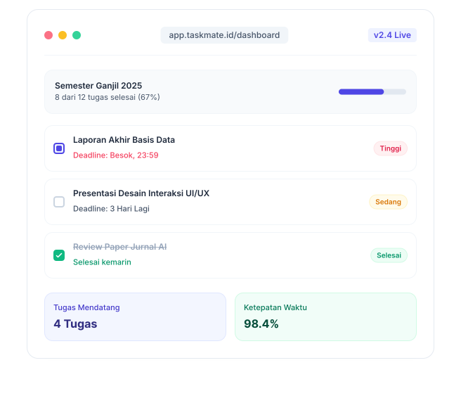

Tugas Desain UI
Status: Sedang Dikerjakan

Informasi Tugas
- Deadline: 24 Mei 2026
- Mata Kuliah: Desain Web
- Waktu Pengerjaan: 08:00 - 17:00 WIB
- Prioritas: Tinggi
Deskripsi
Buat perancangan antarmuka pengguna (UI) menggunakan sistem High Fidelity untuk rancangan TaskMate. Selesaikan komponen UI hingga sesuai dengan user persona dan terintegrasi dengan modul HTML5 semantik.